|
Home
Travel
Cruises
Past Cruises (Diaries)
Future Cruises
Rogues Galleries
Land Trips
Diaries (Land Trips)
Hawai'i
- Big Island - 04'01
Hawai'i
- Maui - 05'02
Hawai'i
- Big Island - 04'03
Hawai'i
- Kaua'i - 09'04
Hawai'i
- Big Island - 04'06
Hawai'i
- Maui - 04'06
Mainland China
- 05'07
Phoenix, Arizona
- 12'07
Greek Isles
- 05'08
Hawai'i
- Kaua'i - 09'08
Hawai'i
- Big Island - 09'09
Hawai'i
- Maui - 05'12
Hawai'i
- Big Island - 04'13
Ireland
- 08'13
Mexico
- Cancun 11'13
France/Belgium/Lux 07'15
Hawai'i
- Big Island - 05'17
England
/ Wales - 06'17
Hawai'i
- Big Island - 09'19
Photography
Cameras
Underwater
Pets
Tara
Blackie
Whitey
Muffy
Ollie
Rusty
Fluffy
Rufus&Dufus
Games
Rowing
Physics
|
|
Rating (out of 5):
Ship  Food
Food  Service
Itinerary
Service
Itinerary
Marjorie booked this cruise to take advantage of T/A pricing on a cruiseline we
had not tried before - Azamara. Their two ships are refurbed Renaissance ships, so
we were very familiar with them. Azamara and Oceania are generally placed together
as equals in the "luxury" hierarchy, so we were anxious to see how we felt they compared.
While the Journey was a lovely ship, we were constantly being reminded of what we
missed from Oceania. Azamara includes complimentary beer, wine and spirits (limited
menu), but with us not being much of drinkers, this wasn't really a bonus. I really missed
my "surf & turf" burger and milkshake for lunch, while Marjorie missed the good
orange juice and fresh fruit selection we were used to on Oceania. We found the waiter
service to be lax and ordering drinks with meals (except wine) was hit and miss whether
they would appear or not (and timely!). Another major difference in lines is that with
Oceania you have the option of sailing on their newer and larger ships which we do
prefer to the tiny R_boats. One final annoyance was that the Journey was due for
major renovations in dry dock in one month's time, but they decided to start some
renos early. As a result, the promenade decks were closed for a couple of days for
resurfacing, ladders and workmen blocked the hallways as they strung new computer
cables, and there were occasional sounds of drilling, sawing, etc.
The ship has a double occupancy capacity of 684, and there were 644 pax aboard.
They must have had some trouble filling the ship, as there were 99 travel
agents (and 33 spouses) that had booked. As a result there were a couple of
special events for the T/A's during the cruise. We were constantly running into other T/A's
around the ship. As usual we formed a trivia team early on in the cruise and Marcel and Cheryl,
and Leah became avid members of our team while a few others drifted in and out to
fill out the team (max 6 people). We won a few times and had lots of second place finishes.
Most of all we had a lot of fun! We were each given "signature forms" for the cruise
where the trivia host would sign affirming our participation at each trivia event. These
sheets could be traded in for prizes at the end of the cruise.
Pre-cruise (Dec 9,10) - Travelling to Miami
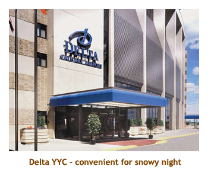
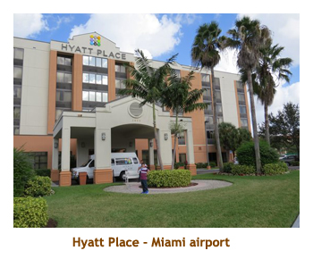
We had an early flight out of Calgary on the 10th, so to ensure a winter storm didn't spoil our plans,
we decided to spend the night before at the airport Delta Hotel. So, on the afternoon of the 9th we
said goodbye to the kitties and drove to Chrissy and Matt's where we were going to store our car.
We all went to Pacini's for dinner and then C&M dropped us off at the airport hotel. We went to bed
early so that we'd be ready for our 6:30 AM flight. We woke up about 3:00 AM and got up by 4:00.
We checked out of the hotel and walked across to the terminal building where it was already very busy. We
checked in our bags, went through US customs and security, and hiked to the departure gate. Starbucks
kindly sold us some hot chocolate. We were aboard our first leg to Houston by 6:30 and arrived safely in
Houston at 11:30. We did a quick turn around and continued our trip to Miami. There were several
people destined for cruise ships. Sitting next to us was a travel agent lady heading to the Azamara cruise.
She had just completed her 200th cruise and this would be her 201st!! We arrived at Miami about 4:30 PM.
We had about an hour's wait for the Hyatt Place hotel shuttle but finally arrived at our hotel around
6:00 PM. It was dark by this time so we had "dinner" at the hotel's microwave service. Then it
was another early night in preparation for our cruising adventure.
Day 1 (Dec 11) - Boarding in Miami
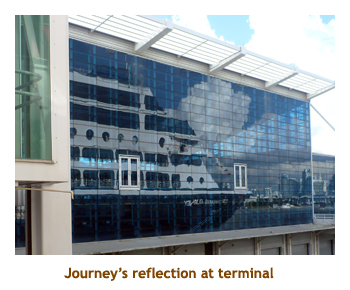
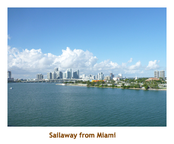
We were up at 7:00 and did the (included) hotel breakfast. We wandered around the area for a bit
and then checked out at 11:00. We caught the hotel shuttle back to the airport, and then the KSA shuttle
to the cruise dock. We arrived at the cruise terminal about 12:00 noon, checked in to the cruise and
then headed to the buffet for lunch. We were allowed into our rooms at 2:30 and our luggage arrived soon
after. We had everything unpacked and stored away by muster time at 5:00 PM. We were supposed
to sail at 6:00, but new homeland security procedures just put into place took up more of the crew's
time than expected which impacted the "suitcase" crew and also those loading food supplies onto the
ship. As a result we didn't sail until 8:30. For dinner I had braised short ribs which were really good.
We skipped the entertainment and instead walked the upper deck and then went to bed early.
Day 2,3 (Dec 12,13) - Two days at sea
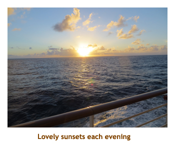
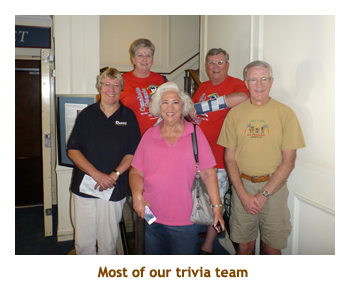
Dec 12 - We were up at 7:00 to a warm but rainy sea day. We had breakfast
in the buffet. We discovered that there would be a compulsory travel agent
seminar in the morning of our first port day (St. John), so there went our
booked snorkel trip out the window. We did the 9:30 trivia and then Marjorie
went to a lecture on shore excursions and me to the gym. At 11:00 there was
a visual trivia on famous villains. We did a quick lunch in the buffet. At
2:00 there was a really interesting lecture on spies. The lecturer was excellent.
At 4:00 we did another trivia, this time a music trivia. At 6:00 there was
a travel agent get together followed by dinner at 6:30 in the MDR
(main dining room). For dinner I had the prime rib. Yum!!
Dec 13 - We were up at 7:00 to a sunny sea day. We had
breakfast in the MDR followed by 9:30 trivia. By this time we had a solid trivia
team for the rest of the cruise. Then Marjorie was off to a destination lecture
while I went to the gym. At 11:00 there was a lecture on code breaking.
Again it was really interesting. We had lunch in the buffet and then lazed around
for most of the afternoon. There was trivia at 4:00 and again at 5:00. For
dinner I had New York strip sirloin. And that was it for our two days at sea.
Day 4 (Dec 14) - St. John, US Virgin Islands
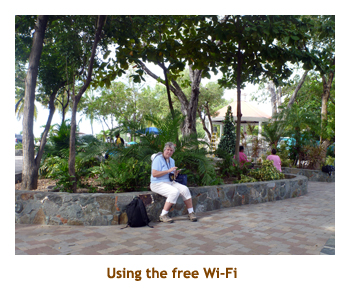
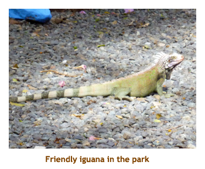
Our two days at sea had been against the current and into a strong headwind.
As we had departed 2.5 hours late from Miami, we were unable to make up any time
so arrived at St. John at 10:15 AM rather than 8:00. Even though our cancelled snorkel
trip was pushed out to 10:00, we decided it was too tight to get to it after Marjorie's T/A
seminar at 8:00. So, we had a leisurely breakfast, then Marjorie headed off to the
seminar and a bit later I went up to morning trivia. At 10:00, Marjorie opted for a
future cruise lecture and I did the gym. We had lunch in the buffet. Afterwards we tendered
into the town of Cruz Bay. We used the internet and then wandered around, doing the town
and a part of the trail heading to Honeymoon Bay. We didn't have our snorkling gear
and it was very hot, so we didn't plan on hiking all the way to the snorkeling area. We
tendered back to the ship by 3:00. We did the 4:00 music trivia and the 5:00 history trivia.
For dinner I had pork scallopini. Early to bed!
Day 5 (Dec 15) - Iles des Saintes, Guadeloupe
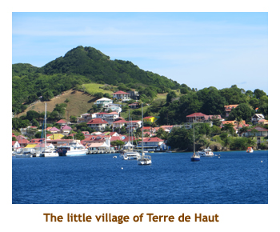
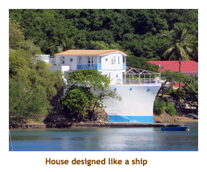
We were up at 7:00 for a relaxed morning, as we wouldn't be hitting Guadeloupe until 1:00 PM.
Actually we weren't heading to the main island, but to a tiny island nearby in the group
of Iles des Saintes. We had breakfast in the buffet and then headed off to morning trivia.
Later, Marjorie skipped off to a lecture on iPads, while I hoofed it up to the gym. We read
for a bit and then did lunch at the buffet. Sure enough we arrived at Terre de Haut, Iles des Saintes,
at 1:00. We grabbed our snorkel gear and tendered over to the town. From there we hiked about a
mile over the hill to Pompierre Beach. There were lots of goats along the way, and even on the
beach. The water was very warm and I did my first snorkel in years without wearing my shorty. The
snorkel was OK - not a lot of fish but some variety. Afterwards we walked back to town and used
the internet. We tendered back to the ship in time for 5:00 trivia. For dinner I had pork schnitzel.
Delicious. The ship didn't sail away until 10:00 PM as we only had 38 nautical miles to cover
to our next port. We read for a while and then went to bed.
| |
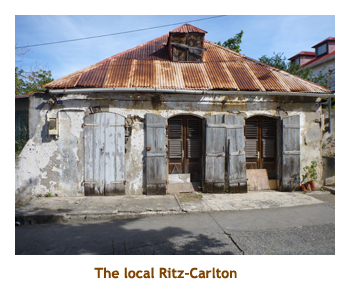 |
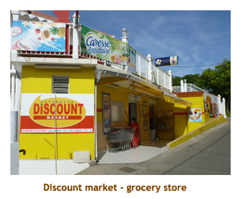 |
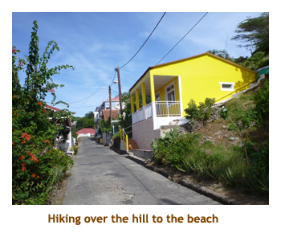 |
| |
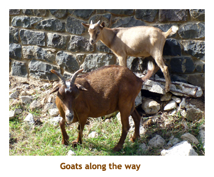 |
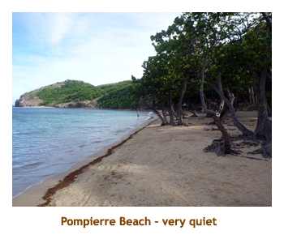 |
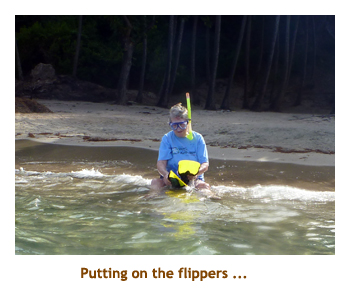 |
Day 6 (Dec 16) - Roseau, Dominica
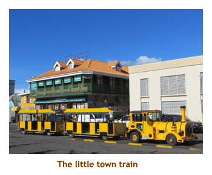
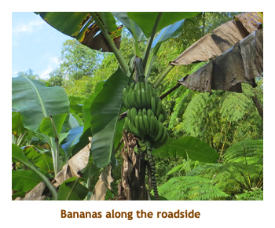
We were up at 7:00 and had breakfast as we pulled into Dominica. The ship was docking rather than anchoring,
so no tendering today! We had been here before, several years ago.
Marjorie had done whale watching, while I had done an island tour and Champagne Beach. This time Marjorie
decided to join me in an island tour and snorkeling at Champagne Beach. Our excursion was for 8:15. There were
13 passengers in our small van and it was hot and sunny. As we drove into the interior of the island ( the rain forest)
it rained. There we saw babanas along the road and did a rain forest hike under a canopy of trees and ferns to
some bubbling pots and hot springs. We also visited the Trafalgar (or "Twin") Falls. Our tour ended up back
at the beach in the sunshine. Champagne Beach got its name from hot spring activity on the sea floor that results
in trains of bubbles rising to the surface. You feel like you're swiming in champagne. The snorkeling was OK, some
variety but not a lot. We were back to the ship by 1:30 for a late lunch in the buffet. Afterwards we wandered back
into town (bus shuttle, actually) to use the internet. We made it back onboard for 4:00 trivia (ABBA music) and 5:00
travel trivia. For dinner I had lamb chops. Very nice!
| |
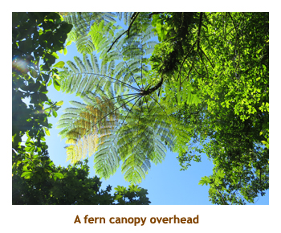 |
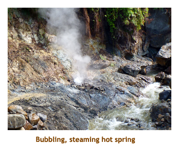 |
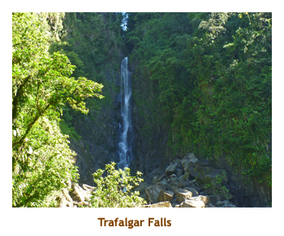 |
| |
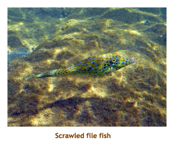 |
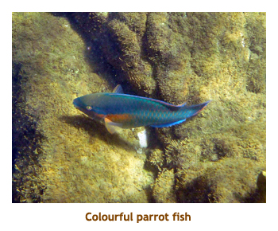 |
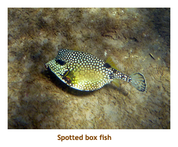 |
Day 7 (Dec 17) - Charlestown, Nevis
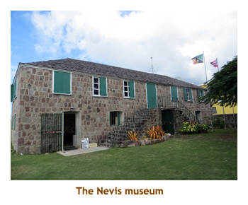
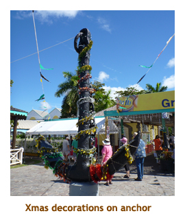
We were up at 7:00 as usual. We had breakfast in the MDR as we watched our
arrival at Nevis. We had been to St. Kitts a few years ago, but never to Nevis.
I had read on the internet that there was no surrounding reef here, so no
good snorkeling. Hence, we planned a relaxing day just walking around the
village of Charlestown. We stayed onboard for 9:30 trivia, and then tendered
to shore to walk around and use the internet. It was hot and sunny.
We tendered back to the ship for lunch in the buffet, and then tendered
back to wander some more and take some photographs. We were back
on board in time for 4:00 trivia followed by 5:00 trivia. Both afternoon trivias
were in the same location (all cruise long), so we generally just sat and talked during the half
hour break between trivias. For dinner I had surf (fillet) and turf (lobster). Yummy!
You learn something new every day: As we stood at the tender
dock today waiting for a ride, I noticed that our ship (out at anchor) was listing
a bit. I had noticed this on previous cruises with various ships and had
always thought (ie. guessed) that it was the wind causing the list. Just to
confirm this, I asked a nearby crew member if this was the case. He
explained that the ship was purposely listed in order to adjust the height
of the ship's tender dock to match the doorway in the tender boats. Of
course the height would vary slightly due to how loaded the ship was, so this
was a vernier adjustment.
| |
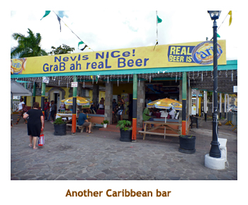 |
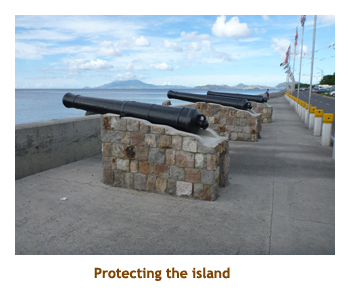 |
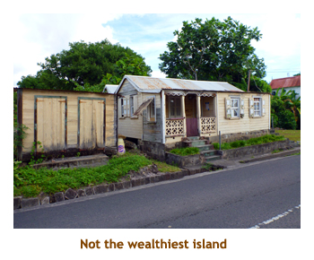 |
| |
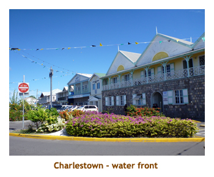 |
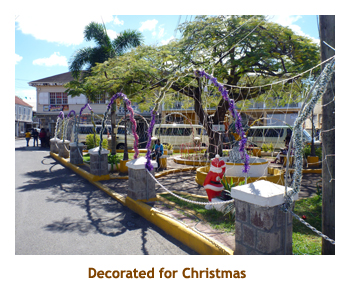 |
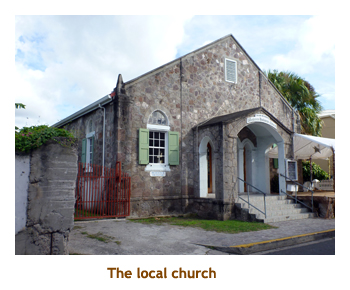 |
Day 8 (Dec 18) - Gustavia, St Barts
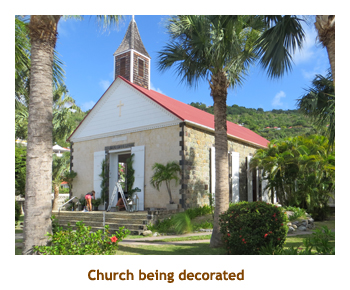
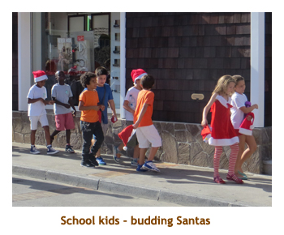
We slept in a bit, rising at 7:30. It was to be a relaxing day as we were going to walk to our favorite
Shell Beach and do some snorkeling. Marjorie did the laundry then we headed to the buffet for breakfast. We hung
around for 9:30 trivia, and then headed off to the beach. Shell Beach is just a few blocks away, on a
route that takes you past the million $$$ yachts and the center of town (Gustavia). The beach wasn't too
crowded and we had a nice snorkel. We returned to the tender slip and headed back to the ship by 1:30.
We had lunch in the buffet. Marjorie decided to tender back into town to use the internet, while I stayed
on board and read my book. Marjorie was back in time for the 4:00 and 5:00 trivias. For dinner I had
swordfish with lobster ravioli. It was very good. Breaking with tradition, we decided to try the entertainment.
It was a lady violinist who was also a comedian. She was excellent. We were overnighting in Gustavia as
it was only 18 nautical miles to ur next port, St. Maarten. We would be leaving at 7:00 AM the next morning.
| |
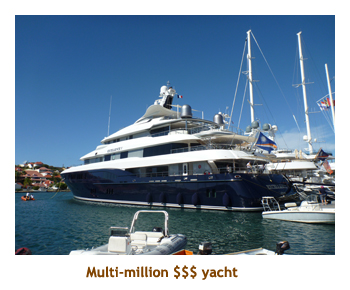 |
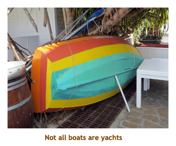 |
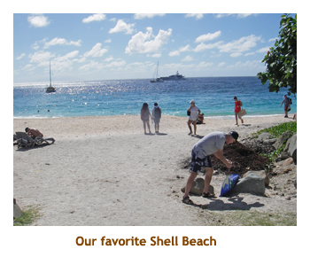 |
| |
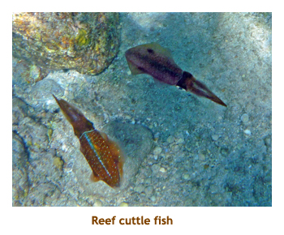 |
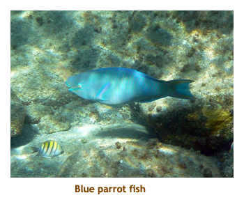 |
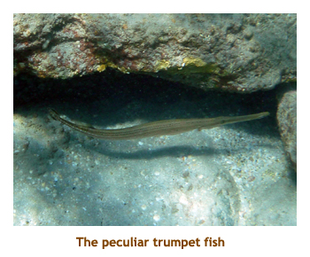 |
Day 9 (Dec 19) - Philipsburg, St. Maarten
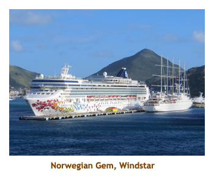
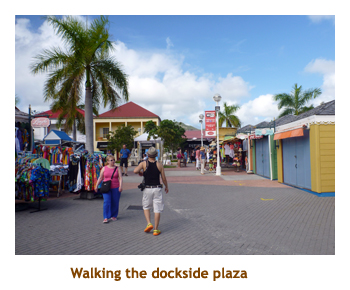
We arose a bit early today, at 6:30, before we had left Gustavia. We would be in Philipsburg by 9:00 AM.
It would be an easy day as we had been to St. Maarten many
times before and were just going to saunter around the dockside plaza. We were docked today, too,
which is so much easier (and faster) than tendering. We had breakfast in the MDR and then did 9:30
trivia. Right after trivia a heavy rainstorm swept past. By the time we got onto the dock it was sunny again.
We walked into the plaza and found free internet at the Little Switzerland shop. We were back on the ship
again in time for lunch. Afterwards Marjorie headed back to the plaza for more interneting while I read my
book on the promenade deck. We reassembled for 4:00 (90's music) and 5:00 (geography) trivia. We
scored slightly above zero on the music trivia, but redeemed ourselves with 20/20 on the geography trivia.
For dinner there was a special buffet set up in the MDR. At 8:30 PM we all pararded off the ship to the main
plaza where they had set up 600+ chairs for our outdoor "Aza-mazing" evening show. We were seranaded by
a high school steel band (before and after the main show) who were excellent. The main show was
an "electrified" string quartet from Trinidad. They were OK, but I much prefered the steel band music.
It sprinkled a few drops of rain during the concert, but it didn't amount to anything. We were back on the ship
by 10:00. Bedtime!
Day 10 (Dec 20) - Spanish Town, Virgin Gorda, BVI
Today was our final port stop. We were arriving in Virgin Gorda which we had really enjoyed a couple of years ago.
We had booked a transfer to the famous beach (the baths) with the huge boulders. We had breakfast in the buffet
and then grabbed our snorkel stuff and headed off for our 8:15 transfer. We were loaded into converted pickup trucks.
At the beach parking lot, the guide was going
to lead the group through the boulders and cave scramble. Marjorie and I knew a better route from the last visit, so
excused ourselves and went the alternate (and much easier) route. We had the beach all to ourselves for almost
an hour. I was the only snorkeler until suddenly I looked up at the beach and the hordes had arrived from a Norwegian
ship. I finished my snorkel, wandered the beach a bit and then we headed back up the trail about 11:15. We had free
rum punch tickets included in our transfer so visited the bar near the parking lot for our free drink (and
used their free internet). The trucks arrived at
11:45 to take us back to the ship. We tendered to the ship in time for the noon buffet. We read our books for the afternoon
and then did the 4:00 / 5:00 trivia thing. For dinner I had rack of lamb. Yum!!
Day 11, 12 (Dec 21,22)) - Two days at sea
Dec 21: So, our ports were all completed and now we had two sea days back to Miami.
We were up at 6:30 and Marjorie did the laundry. We had breakfast in the MDR and then did 9:30 trivia.
Marjorie went to the captain's talk while I went to the gym. Afterwards I read for a while and Marjorie
attended a session on decorating gingerbread houses. At lunch there
was a special BBQ lunch in the MDR where the captain and his direct reports were serving the meal.
We found spots on the promenade deck and read our books. At 3:00 there was an interesting lecture
on interrogation techniques.This was followed by 4:00 and 5:00 trivia. We had a special dinner with the
Azamara BDM for the Canadian market. Also there was another Canadian travel agent couple from
north of Toronto. I had veal scallopini which was excellent. We wandered the ship for a while and then
went to bed.
Dec 22: Today was essentially a repeat of yesterday, but with no laundry,
no gingerbread decorating, no BBQ, and no
special dinner. The lecture was on Wild Bill Donavan of CIA fame. At 4:30, after the 4:00 trivia, there
was a prize redemption where we turned in our "signature sheets". We had enough signatures (80)
to get two nice Azamara t-shirts (30 apiece). We finished our afternoon with a session of packing
our bags. For dinner I had crab ravioli. After dinner we completed our packing and put our bags
out in the hallway. We read for a bit and then to bed.
Day 13 (Dec 23) - Disembarking and leaving Miami
 We woke up about 6:30 in the port of Miami. It was sunny and supposed to hit 29. Back home in
Calgary it was forecast for -16. We had our final breakfast in the MDR. After eating we read in
our room for a while. About 8:30 we vacated our room and disembarked from the ship. As we headed
off the ship there was a crane lifting decking materials to the upper deck. A nice treat for the next sailing.
Around
9:00 we caught the KSA shuttle which we had prebooked. We were to the airport about
9:30, way too early for our 3:00 PM flight. We weren't allowed to check in until 11:30. So
we did some internet stuff and read our books. We checked in and had another wait
before boarding for Denver. We left at 3:30 and arrived in Denver at 5:30. We deplaned
at gate B20, and when we looked up our next leg (to Calgary), the gate was B20! Haven't
had that before! This gave us time to get a sandwich before taking off for Calgary. For
some reason we had a long wait on the tarmac (in Denver) and then de-icing and
queueing for the runway. We finally took off one hour late. We arrived in Calgary
at 10:00 PM. We grabbed a cab to Chrissy's house (they were in Mexico) and transferred to
our own car. We were home at 11:00. The house and the kitties were all fine and glad to see us.
Another wonderful cruise!
We woke up about 6:30 in the port of Miami. It was sunny and supposed to hit 29. Back home in
Calgary it was forecast for -16. We had our final breakfast in the MDR. After eating we read in
our room for a while. About 8:30 we vacated our room and disembarked from the ship. As we headed
off the ship there was a crane lifting decking materials to the upper deck. A nice treat for the next sailing.
Around
9:00 we caught the KSA shuttle which we had prebooked. We were to the airport about
9:30, way too early for our 3:00 PM flight. We weren't allowed to check in until 11:30. So
we did some internet stuff and read our books. We checked in and had another wait
before boarding for Denver. We left at 3:30 and arrived in Denver at 5:30. We deplaned
at gate B20, and when we looked up our next leg (to Calgary), the gate was B20! Haven't
had that before! This gave us time to get a sandwich before taking off for Calgary. For
some reason we had a long wait on the tarmac (in Denver) and then de-icing and
queueing for the runway. We finally took off one hour late. We arrived in Calgary
at 10:00 PM. We grabbed a cab to Chrissy's house (they were in Mexico) and transferred to
our own car. We were home at 11:00. The house and the kitties were all fine and glad to see us.
Another wonderful cruise!
|